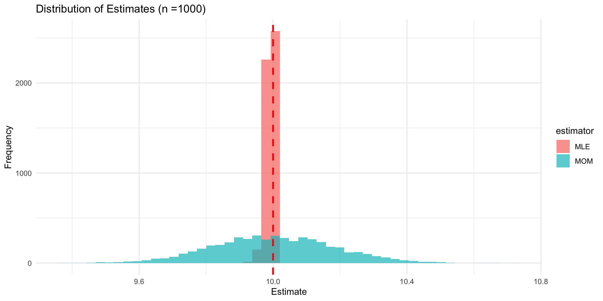

Is there a genetic component contributing to the total variance of these traits?
Is the genetic component of the traits driven by a few genes located on a particular chromosome, or are there many genes scattered across many chromosomes? How many genes are involved and is this a scientifically sensible question?
Are the genes detected protein-coding genes, or are there also noncoding genes involved in gene regulation?
How is the strength of the signals captured in a statistical analysis related to the two types of genes? What fraction of the total genetic variation is allocated to both types of genes?
What are the frequencies of the genes in the sample? Are the frequencies associated with the magnitude of their effects on the traits?
What is the mode of action of the genes?
A statistical geneticist may want to know
What proportion of the genetic variance estimated in 1 can be explained by the discovered genes?
Given the information on the set of genes carried by an individual, will a genetic score constructed before observing the trait help with early diagnosis and prevention?
How should the predictive ability of the score be measured?
Are there other non-genetic factors that affect the traits, such as smoking behavior, alcohol consumption, blood pressure measurements, body mass index and level of physical exercise?
Could the predictive ability of the genetic score be improved by incorporation of these non-genetic sources of information, either additively or considering interactions? What is the relative contribution from the different sources of information?
What does the data look like?
Family/Pedigree Studies
Family/Pedigree Studies
What does the data look like?
Genome-Wide Association Studies (GWAS)
Genome-Wide Association Studies
Core abstractions for quantitative biology
Model-Building
Formulate generative models linking genotype, environment, and phenotype (e.g., linear mixed, Bayesian hierarchical, non-parametric kernels).
Balance realism and tractability to enable scalable computation on genome-scale data.
Core abstractions for quantitative biology
Inference
Estimate unknown parameters and latent effects via likelihood maximisation, EM, MCMC, or SGD
Quantify uncertainty with standard errors, posterior intervals, and credible sets
Control false discoveries across millions of tests with FDR/Q-value, permutation, and empirical-Bayes shrinkage.
Core abstractions for quantitative biology
Prediction
Use fitted models for out-of-sample trait prediction: BLUP/GBLUP, ridge/lasso/elastic-net, Bayesian whole-genome regressions, random forests, neural nets.
Evaluate accuracy (MSE, AUC), bias–variance trade-off, calibration, and portability across ancestries or cell types.
Translate genomic predictions into actionable scores for breeding, risk stratification, and drug-target prioritisation.
Core abstractions for quantitative biology
Interpretation & Validation
Integrate functional annotations, eQTL, and single-cell data to refine biological mechanisms.
Perform replication, cross-cohort meta-analysis, and sensitivity analyses to population assumptions.
Communicate findings with clear visualisations and reproducible workflows (R/Bioconductor, Git, notebooks).
Early work in the field
Genetics, statistics, and eugenics, have always been closely linked
Standard eugenics scheme of descent
Francis Galton and his work, “Inquires into Human Faculty and its Development”
The ethics of genetics and genomics is/(was) of great importance!
Some vocabulary
Trait/Phenotype: A measurable characteristic of an organism, such as height, weight, or disease status.
Gene: Unit of inheritance
Genotype: The genetic constitution of an individual, often represented by specific alleles at particular loci.
Allele: A variant form of a gene that can exist at a specific locus on a chromosome.
Locus: A specific, fixed position on a chromosome where a particular gene or genetic marker is located.
Diploid: Having two sets of chromosomes (one from each parent)
Penetrance: Likelihood of expressing a phenotype given a genotype
Polymorphism: The occurrence of two or more genetically determined forms in a population, such as single nucleotide polymorphisms (SNPs) or copy number variations (CNVs).
Genetic Marker: A specific DNA sequence with a known location on a chromosome that can be used to identify individuals or species, often used in genetic mapping or association studies.
Some vocabulary
Mendelian Disease: A disease caused by a mutation in a single gene, following Mendelian inheritance patterns (dominant, recessive, X-linked).
Linkage Disequilibrium (LD): The non-random association of alleles at different loci, indicating that certain allele combinations occur together more frequently than expected by chance.
Heritability: The proportion of phenotypic variance in a trait that can be attributed to genetic variance, often estimated through twin or family studies.
Genome-Wide Association Study (GWAS): A study that looks for associations between genetic variants across the genome and specific traits or diseases in a large population.
Polygenic Score (PGS): A score that aggregates the effects of multiple genetic variants to predict an individual’s genetic predisposition to a trait or disease.
Quantitative Trait Locus (QTL): A region of the genome that is associated with a quantitative trait, often identified through linkage or association mapping.
Epistasis: The interaction between genes where the effect of one gene is modified by one or more other genes, influencing the expression of a trait.
A random variable is a numerical summary of randomness (e.g., the count of (A) alleles in a sample). We will denote random variables with uppercase letters (e.g., X, Y).
We use a model (e.g., binomial/multinomial) to describe how data vary from sample to sample.
This is otherwise known as a probability mass function (pmf) for discrete variables, or a probability density function (pdf) for continuous variables
Key ideas:
Expectation (mean) and variance: long‑run average and spread.
E[X] = \sum x \cdot P(X = x) (discrete) or E[X] = \int x f(x) dx (continuous)
Independence: P(A \cap B) = P(A) \cdot P(B)\iffA and B are independent
Conditional probability and Bayes’ Theorem are crucial for understanding rare disease genetics! For example, consider a rare disease with a prevalence of 1 in 10,000. If a genetic test has a sensitivity of 99% and a specificity of 99%, we can use Bayes’ Theorem to calculate the probability that an individual has the disease given a positive test result.
Imagine a geneticist is studying allele ages (i.e., how many generations ago an allele arose via mutation) under a simplified model where new mutations arise randomly and uniformly over a fixed window — say, the last \theta generations.
We could model X \sim \textsf{Uniform}(0, \theta).
We have our observed sample \{x_1,x_2, \ldots, x_n\}, ages in generations of n observed alleles.
For concreteness, let our sample be \{0, 1, 8, 4, 3, 7, 7, 6\}.
How should we estimate \theta ?

Genetic Models
Understanding random variables, sampling distributions, and bias/variance of estimators helps motivate biological questions, and understand how they can be answered
Let y be the expression of a trait, G be the additive contribution of genetic variables, and an environmental value E;
What assumptions do we make via the following models?
\begin{align}
y &= G + E \\
y &= \beta_0 + \beta_1 G + \beta_2 E + \epsilon \\
y &= \beta_0 + \beta_1 G + \beta_2 E + \epsilon, \quad \epsilon \sim N(0, \sigma^2) \\
y &= \beta_0 + \beta_1 G + \beta_2 E + \beta_3 \left(G \times E\right) + \epsilon, \quad \epsilon \sim N(0, \sigma^2)
\end{align}
Modeling
Imagine that we have a sample size of n unrelated haploid individuals from some population
We want to estimate allele frequencies for a biallelic SNP, say A/a
In our sample, we observe x individuals with allele A and n - x individuals with allele a
Let p be the frequency of allele A and q = 1 - p be the frequency of allele a
Pr(X = x| n, p) = \binom{n}{x} p^x q^{n - x}
Lets say we observe n = 27 and x = 11. How do we estimate p?
Likelihood Functions
The likelihood function is a function of the parameters of a statistical model, given specific observed data.
It represents the plausibility of different parameter values based on the observed data.
For a given set of data, the likelihood function is defined as: L(\theta | data) = P(data | \theta)
In our case, the likelihood function for p is: L(p | x = 11, n = 27) = P(X = 11 | n = 27, p) = \binom{27}{11} p^{11} (1 - p)^{16}
We are asking, “how likely is it that we would observe this data for different values of p?”
n <-27x <-11p_seq <-seq(0, 1, length.out =200)likelihood <-dbinom(x, n, p_seq)plot <-ggplot(data.frame(p = p_seq, likelihood = likelihood),aes(x = p, y = likelihood)) +geom_line(linewidth =1) +labs(x ="Probability of Success (p)",y ="Likelihood",title ="Binomial Likelihood Function" ) +geom_vline(xintercept = x / n,color ="red",linetype ="dashed" ) +theme_light(base_size =18) +theme(panel.grid =element_blank())
Modeling, but make it bayesian
In Bayesian statistics, we treat parameters as random variables and use probability distributions to represent our uncertainty about them.
We start with a prior distribution that reflects our beliefs about the parameter before seeing the data.
We then use the observed data to update our beliefs and obtain a posterior distribution.
The posterior distribution combines the information from the prior and the likelihood of the observed data using Bayes’ theorem: P(p | data) = \frac{P(data | p) P(p)}{P(data)}
Let’s say we have run a previous experiment and observed n = 20 individuals and x = 3 individuals with allele A (again, bilelic SNP).
We can use this information to inform our prior distribution for p
Modeling, but make it bayesian
p <-seq(0, 1, length.out =1000)# Prior (Beta distribution from previous experiment)prior <-dbeta(p, 3+1, 17+1)# Likelihood (Beta distribution from current data)likelihood <-dbeta(p, 11+1, 16+1)# Posterior (Beta distribution combining both)posterior <-dbeta(p, 14+1, 33+1)# Combine into a data frameplot_data <-data.frame(p =rep(p, 3),density =c(prior, likelihood, posterior),type =rep(c("Prior", "Likelihood", "Posterior"), each =length(p)))# Add flat prior distributionflat_prior <-dbeta(p, 1, 1)flat_posterior <-dbeta(p, 12, 17)plot_data <-rbind( plot_data,data.frame(p =rep(p, 3),density =c(flat_prior, likelihood, flat_posterior),type =rep(c("Prior", "Likelihood", "Posterior"), each =length(p)) ))# Add a column to distinguish between informative and flat scenariosplot_data$scenario <-c(rep("Informative", 3000), rep("Flat", 3000))
p1 <-ggplot( plot_data %>%filter(scenario =="Informative"),aes(x = p, y = density, color = type)) +geom_line(linewidth =2) +geom_vline(xintercept =11/27, linetype ="dashed", color ="red") +labs(x ="Allele Frequency (p)",y ="Density",title ="Bayesian Update with Informative Prior" ) +scale_color_viridis_d() +theme_minimal(base_size =15)
p2 <-ggplot( plot_data %>%filter(scenario =="Flat"),aes(x = p, y = density, color = type, linetype = type)) +geom_line(linewidth =2) +scale_linetype_manual(values =c("Prior"="dotted", "Likelihood"="solid", "Posterior"="dashed")) +geom_vline(xintercept =11/27, linetype ="dotdash", color ="red") +labs(x ="Allele Frequency (p)",y ="Density",title ="Bayesian Update with Flat Prior" ) +theme_minimal(base_size =15) +scale_color_viridis_d() +annotate("text",x =0.7, y =max(flat_posterior) *0.8,label ="Likelihood ≈ Posterior", color ="gray30" )
Mendel’s Laws
Mendel’s First Law (Segregation)
One allele of each parent is randomly transmitted, with probability 1/2, to the offspring; the alleles unite randomly to form the offspring’s genotype.
Mendel’s Second Law (Independent Assortment)
At different loci, alleles are transmitted independently (when loci are unlinked).
n_{AA} = Number of individuals with genotype AA n_{Aa} = Number of individuals with genotype Aa n_{aa} = Number of individuals with genotype aa
where, n = n_{AA} + n_{Aa} + n_{aa} = N.
The sample proportions of allele A is:
\hat{p} = \frac{2n_{AA} + n_{Aa}}{2n}
The usual standard error for a proportion is \sqrt{\hat{p}(1 - \hat{p})/2n}, but this assumes independence of the 2n sampled chromosomes.
Hardy–Weinberg Equilibrium (HWE): Assumptions
Let’s reframe the problem in terms of genotype frequencies. First, some assumptions:
Random mating
Large population (no strong drift in one generation)
No selection, no migration, no mutation (in the generation under study)
Accurate genotypes (no systematic genotyping error)
If these hold, and the allele frequency of A is p (so q = 1-p), we say that the population is in Hardy-Weinberg Equilibrium (HWE). The population genotype probabilities are:
P(AA)=p^2 \quad P(Aa)=2pq \quad P(aa)=q^2
As a consequence, the genotype frequencies in a random sample of n individuals are approximately multinomially distributed with cell probabilities (p^2, 2pq, q^2). Thus, the sampling error of \hat{p} is approximately \sqrt{p(1-p)/2n}.
This confidence interval is known as a Wald confidence interval.
Testing for HWE
With large samples, we can test for HWE using a chi-squared goodness-of-fit test.